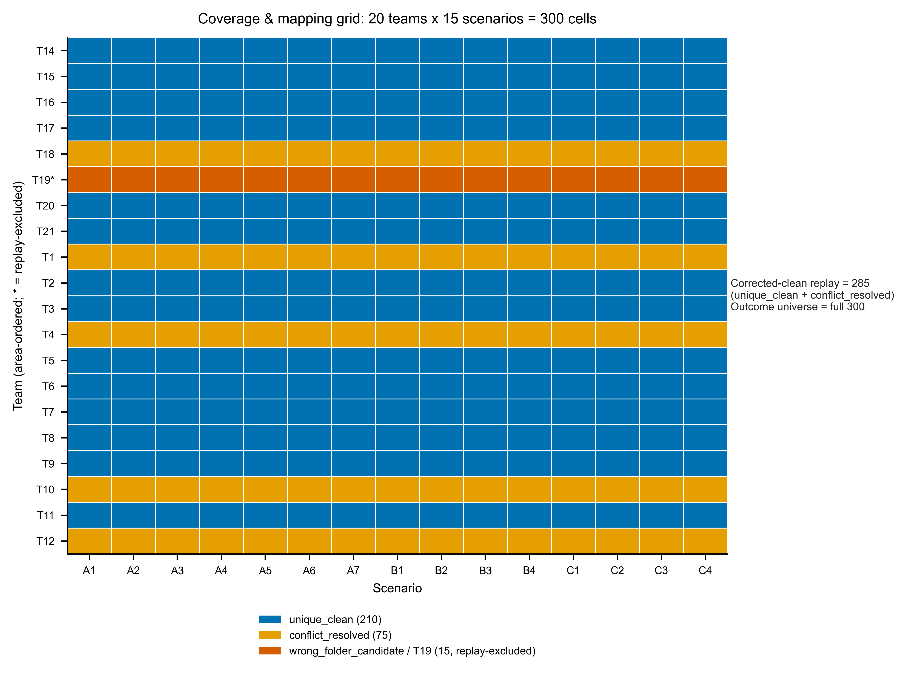
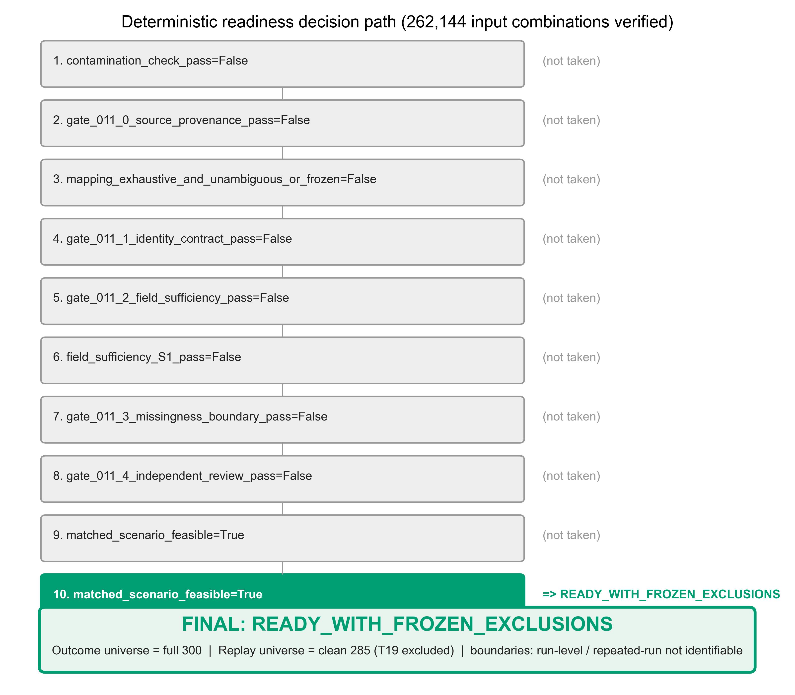

Executive Summary
READY_WITH_FROZEN_EXCLUSIONS is the final readiness state for RQ011A. The packet supports two explicit universes: full_300 for official outcomes and clean_285 for replay-dependent work.
The outcome universe keeps the full official score/PDF set: 20 teams x 15 scenarios = 300 algorithm-by-scenario cells. The replay-, trajectory-, interface-, and IPV-dependent universe uses the corrected-clean replay mask of 285 cells. T19 is the only frozen exclusion because no unique T19-owned vehicle-3190 replay/session was located.
The final figure set is F1-F5. F1 and F2 document the corrected mapping universe, F3 documents field availability, F4 documents the residual selection-bias boundary, and F5 documents the decision path to the readiness leaf.
Provenance And Completeness
The synced all-team dataset is complete for the Phase-2 inventory universe: 20 team folders, 20 diagnostic PDFs, 300 scenario-score rows, no empty directories, no archive files requiring extraction, no zero-byte files, and no cloud/stub-like placeholders. The scenario set is fixed at 15 common labels across all teams.
Every diagnostic PDF was readable and text-probe parseable. This physical and source-readiness foundation supports the downstream mapping and field gates. F1 uses the 20 x 15 universe as its tile grid, and F5 carries the full_300 outcome universe into the final decision path.

{kind=link}
Identity And Gate 011-1
Gate 011-1 passes only as SEPARABLE_WITH_DOCUMENTED_UNRESOLVED. The identity phase records 300 canonical score cells, 20 teams, 15 scenarios, 22 materialized session rows, 16 teams with one materialized session, 3 teams with multiple materialized sessions, and 1 team with a missing materialized session.
The gate explicitly sets run_level_claims_allowed=false. Run IDs are constructed from team/run semantics rather than explicit repeated-run evidence, and case_id equals scenario_id for score-cell inventory only. The correct downstream unit is matched scenario or algorithm-by-scenario, not run-level, repeated-run, seed-level, or independent case-level inference.
Mapping And Six-Team Corrections
The corrected mapping universe has 210 unique_clean, 75 conflict_resolved, and 15 wrong_folder_candidate cells. The corrected-clean replay mask therefore contains 285 cells: 210 pre-existing unique-clean cells plus 75 PI-authorized evidence-corrected cells. T19 contributes the remaining 15 wrong-folder-candidate cells and is excluded from replay-dependent analyses.
The six-team audit resolves five teams into the clean replay universe: T1 is a duplicate extraction retained as one authoritative session; T4, T10, and T12 use timestamp evidence to select the later matching session; T18 is assigned the cross-folder session 6937-1766209673 based on vehicle 3180, PDF start time, onsite task/device record, and trajectory ego ID. T19 remains excluded because its PDF identifies vehicle 3190 starting 14:17, while the only materialized allowed session is task 6937/vehicle 3180 and no unique T19-owned replay trajectory was found.
Correction audit: T1 -> 6940-1766211847; T4 -> 6944-1766214451; T10 -> 6948-1766217297; T12 -> 6953-1766219816; T18 -> 6937-1766209673; T19 -> excluded.
{kind=link}
Field Availability And Outcome Recovery
The field gate passes for the attainable matched-scenario unit. Phase 5 records all outcome fields recovered from parsed diagnostic PDFs and the score table, including per-scenario scores, success/failure, collision/rule violations, mission status, and intervention/autonomy proxies.
The key count is 33 score-zero collision cells across the full 300 score/PDF universe, with 300 PDF summary rows matched and 300 PDF detail units with key metrics. The corrected-clean replay check records required logs and replay fields present or derivable for 285 corrected-clean cells across 19 selected clean sessions; T19 remains unavailable for replay fields.
The limitation is not PDF outcome recovery. It is full-300 replay sufficiency: the full scored set is not field-sufficient for replay-dependent trajectory/IPV derivation because wrong-folder rows remain excluded. Script/version/seed metadata is missing and remains incompatible with repeated-run or seed-level claims.
{kind=link}
Repeated-Run Versus Matched-Scenario Feasibility
Repeated runs are not identifiable. The repeated-run feasibility artifact records repeated_runs_identifiable=false, same_algo_repeated_initial_conditions=false, and recommended_comparison_mode=matched_scenario. It also records 0 team-by-algorithm-by-scenario cells with multiple distinct run IDs or selected session IDs, 0 explicit run columns in score/session tables, official runs_per_team=1, and repeated_runs=false.
The viable unit is matched scenario comparison across algorithms/teams while preserving the 15 common scenario labels. This is a scope boundary rather than a terminal blocker: run-level and repeated-run claims are forbidden, but matched-scenario readiness with frozen replay exclusions remains available.
Interaction-Estimability Interface
The interface-estimability phase is partial, not fully ready and not blocked. The clean S1 audit records ego trajectories, surrounding actor trajectories, timestamps, and matched scenario identity for clean cells.
Direct counterpart_id, frozen interaction-opportunity/onset/stability rules, detailed map-route-role confidence, and one fused case-ID shortfall remain unresolved. The readiness report can therefore state that the data surface is compatible with later interface design, but it must not claim final IPV interface thresholds, selected-counterpart logic, or threshold-independent opportunity definitions have been frozen.
Missingness And Selection
Outcome-source analysis has no exclusion: the full_300 official score/PDF universe remains intact. Replay-dependent analysis uses clean_285 and excludes only T19. The missingness artifact classifies residual replay bias as moderate.
Scenario composition remains balanced: each scenario has 20 full cells and 19 replay cells. F4 is a selection-bias boundary figure, not an IPV-outcome analysis.
{kind=link}
Analysis Unit
The recommended base unit is algorithm x scenario. Outcome readiness is identified over full_300 official score/PDF cells with no exclusions. Replay, trajectory, interface, and IPV readiness is identified only for clean_285 corrected-clean cells, with T19 excluded and a moderate residual selection-bias caveat.
Team ID and area ID should remain as metadata, clustering, stratification, or fixed-effect fields. They are not substitutes for a run-level or repeated-run unit. Case-level and session-level units are rejected because case identity is not independently separable from scenario labels and session materialization does not define the official outcome unit.

{kind=link}
Red Team And Replication Outcomes
The red-team verdict is PASS_NO_BLOCKER with 0 blocking items and 1 nonblocking item, RT3_V07_FIELD_TRACEABILITY. The red team did not challenge the final status and recommended READY_WITH_FROZEN_EXCLUSIONS.
Its key evidence confirms promoted-team clean counts of 15 cells each for T1, T4, T10, T12, and T18, and 0 clean cells for T19. The replication worker independently agrees on 20 teams, 300 total scored cells, 285 clean-mask cells, 5 corrections, 1 excluded team, 33 full collisions, 24 replay collisions, 9 T19 collisions, field sufficiency over corrected-clean cells, and final status READY_WITH_FROZEN_EXCLUSIONS.
Limitations And Caveats
The readiness packet carries these durable limitations:
- RT03 score-zero collision semantics: scenario score 0 is an official zero-score failure flag and may be used as the official collision/failure indicator under the score/PDF recoding contract. It must not be described as a literal parsed crash count when PDF detail text reports zero times or is internally inconsistent.
- RT04 canonical scenario mapping: scenario identity must use the canonical
scenario_idtoscenario_namemap. Analysts must not infer scenario identity from diagnostic-PDF row order. - RT06 S1 field sufficiency scope: required inputs are available or derivable; TTC, APET, minimum distance, and related replay-derived metrics have not already been computed by this readiness packet.
- T19 replay missing: T19 has no unique replay session and is excluded only from replay-dependent analyses, not from full_300 outcome readiness.
- Run-level boundary: run-level, repeated-run, seed-level, and independent-case claims remain unavailable by design.
F3 should be read with the RT06 boundary, F4 with the T19 selection-bias boundary, and F5 with the run-level and repeated-run boundary.
Reproduction Commands And Artifact Index
The report package can be reproduced from recorded artifacts without plotting or IPV-outcome reads by loading the exact fixed inputs and writing only figure source CSVs, the figure manifest, and the narrative source.
python3 - <<'PY_CHECK'
import csv, json
from pathlib import Path
root = Path('reports/studies/RQ011_onsite_full_universe_readiness/RQ011_2_onsite_readiness_20260623T201415+0800_efdd75a5/01_results')
for p in [
root/'figures/source/coverage_mapping_matrix.csv',
root/'figures/source/mapping_status_counts.csv',
root/'figures/source/field_availability.csv',
root/'figures/source/selection_bias.csv',
root/'figures/source/readiness_decision_map.csv',
]:
rows = list(csv.DictReader(p.open(newline='', encoding='utf-8')))
print(p.name, len(rows))
json.load((root/'figures/figure_manifest.json').open(encoding='utf-8'))
print('manifest ok')
PY_CHECKReader-Facing Figure Sources
Primary Phase Artifacts
- Run manifest
- Inventory summary
- Completeness report
- Identity summary
- Gate 011-1
- Mapping master
- Mapping status counts
- Corrected clean mask
- Correction audit
- Run/session/case resolution
- Field dictionary
- Field availability matrix
- Field sufficiency verdict
- Repeated-run feasibility
- Interface estimability
- Selection bias
- Missingness diagnostics
- Analysis unit recommendation
- Final readiness status
- Caveats
- Reverify verdict
- Red-team verdict
- Replication comparison
Contrast With The Suspended RQ011_1
The suspended RQ011_1 state was a data-readiness blocker because the local/source universe was physically incomplete: empty raw folders, unextracted archives, and cloud-only/local-placeholder risks prevented a defensible full-universe readiness claim. RQ011_2 changes that physical coverage conclusion by using the synced all-team universe with 20 folders, 20 PDFs, and 300 official score/PDF cells.
RQ011_2 also changes the field conclusion because diagnostic PDFs were parsed and outcome fields were recovered, including success/failure, collision/rule-violation, mission status, and intervention/autonomy proxies. What did not change is the run-level boundary: RQ011_2 still has run_level_claims_allowed=false, now as an explicit separability/design boundary rather than as a physical-completeness blocker.
The contrast is not that RQ011_2 is unrestricted. It is ready under a split universe: full_300 outcome readiness plus clean_285 replay/IPV-dependent readiness with T19 frozen out and moderate residual replay-selection bias.